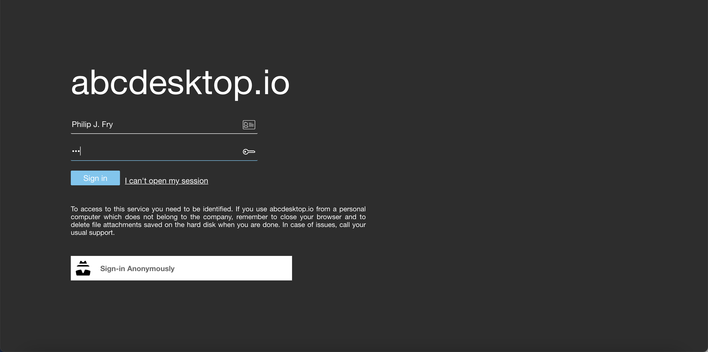
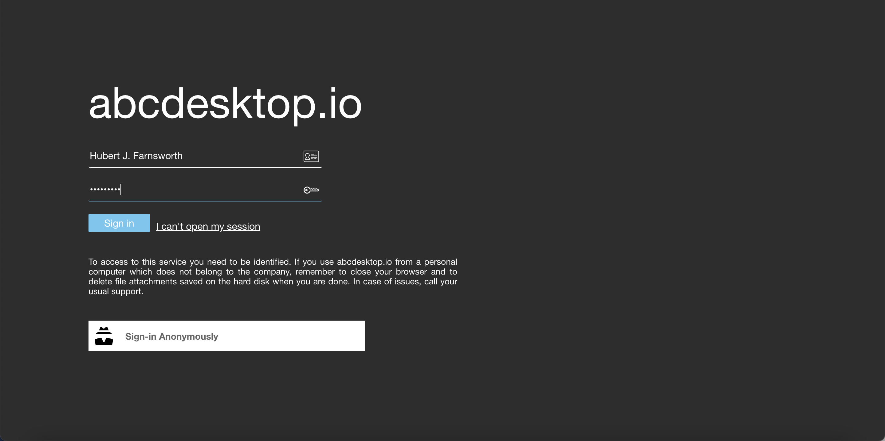
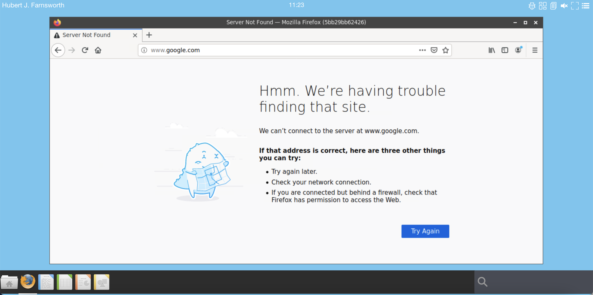
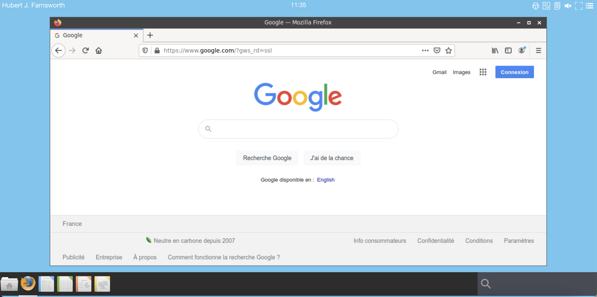

Using docker network for an application
Requirements
Goals
- Use a dedicated network for an application. For example bind the application Firefox to a dedicated docker network. This dedicated network can use macvlan, ipvlan or an SRIOV network driver.
Architecture
When abcdesktop create a docker container, abcdesktop can set a dedicated network for this container.

Create a dedicated network for your application
On your worker nodes :
- create a dedicated network interface to bridge the new network interface
- add the label
abcdesktop=trueto the network object
You have to choose a nework driver for example
| network driver |
|---|
| macvlan |
| ipvlan |
| docker-sriov-plugin |
Only the name of the network is used by abcdesktop.
Create a network with macvlan or ipvlan driver
In these two examples :
- Subnet is
192.168.8.0/24 - Gateway is
192.168.8.254 - Ip Range is
192.168.8.0/27
Example with macvlan :
Create a network abcnetfirefox with the driver macvlan and bridge the network interface eno1 with the vlan 123
docker network create --label type=oc.app -d macvlan --subnet=192.168.8.0/24 --gateway=192.168.8.254 --ip-range=192.168.8.0/27 -o parent=eno1.123 abcnetfirefox
Example with ipvlan ipvlan_mode=l2 :
Create a network abcnetfirefox with the driver ipvlan with ipvlan_mode=l2 option and bridge the network interface eno1 with the vlan 123.
docker network create --label type=oc.app -d ipvlan -o ipvlan_mode=l2 --subnet=192.168.8.0/24 --gateway=192.168.8.254 --ip-range=192.168.8.0/27 -o parent=eno1.123 abcnetfirefox
Test your new network (macvlan or ipvlan):
Make sure that's you can reach the default gateway and the dns server for container. In this example, just start a busybox to :
pingthe default gatewaynslookupto query www.google.com ip address
export GATEWAY=192.168.8.254
docker run --rm --network abcnetfirefox busybox ping $GATEWAY
# Googles public DNS server 8.8.8.8 is added
docker run --rm --network abcnetfirefox --dns 8.8.8.8 busybox ping www.google.com
Applications rules
Update your applist.json file and add a specific rule into the firefox application description
git clone https://github.com/abcdesktopio/oc.apps.git
cd oc.apps
Specific rules entry example
"rules": { "homedir": { "default": true, "ship": true },
"network": { "default": false,
"internet": {
"name": "abcnetfirefox",
"dns": [ "8.8.8.8" ] } } },
In this example, if the current user token contains the tag label internet when the firefox application use abcnetfirefox and the dns 8.8.8.8
Edit the applist.json file
Edit the applist.json file, and add rules to the application firefox for example
The new firefox dictionary with rules :
{
"cat": "office",
"preruncommands": [ "RUN DEBIAN_FRONTEND=noninteractive echo ttf-mscorefonts-installer msttcorefonts/accepted-mscorefonts-eula select true | debconf-set-selections",
"RUN apt-get update && apt-get install --no-install-recommends --yes ttf-mscorefonts-installer ttf-bitstream-vera ttf-dejavu ttf-xfree86-nonfree && apt-get clean",
"RUN apt-get update && apt-get install --no-install-recommends --yes winbind firefox $(apt-cache search firefox-locale | awk '{print $1 }') && apt-get clean",
"RUN apt-get update && apt-get install --no-install-recommends --yes flashplugin-installer ubuntu-restricted-extras libavc1394-0 && apt-get clean",
"RUN apt-get update && apt-get install --no-install-recommends --yes libasound2-plugins libgail-common libgtk2.0-bin chromium-codecs-ffmpeg-extra gstreamer1.0-libav gstreamer1.0-plugins-ugly gstreamer1.0-vaapi libavcodec-extra && apt-get clean",
"COPY composer/init.d/init.firefox /composer/init.d/init.firefox",
"COPY policies.json /usr/lib/firefox/distribution",
"COPY /ntlm_auth /usr/bin/ntlm_auth.abcdesktop",
"RUN chown root:root /usr/bin/ntlm_auth.desktop && chmod 111 /usr/bin/ntlm_auth.abcdesktop",
"ENV NSS_SDB_USE_CACHE=yes" ],
"debpackage": "",
"icon": "firefox.svg",
"keyword": "firefox,mozilla,web,internet",
"launch": "Navigator.Firefox",
"name": "Firefox",
"displayname": "Firefox",
"showinview": "dock",
"splash": "enable",
"mem_limit": "16gb",
"oomkilldisable": true,
"path": "/usr/bin/firefox",
"template": "abcdesktopio/oc.template.gtk",
"mimetype": "text/html;text/xml;application/xhtml+xml;application/xml;application/rss+xml;application/rdf+xml;x-scheme-handler/http;x-scheme-handler/https;x-scheme-handler/ftp;video/webm;application/x-xpinstall;",
"legacyfileextensions": "htm;html;xml",
"fileextensions": "htm;html;xml;gif",
"desktopfile":"/usr/share/applications/firefox.desktop",
"shm_size": "2gb",
"usedefaultapplication": true,
"rules": { "homedir": { "default": true, "ship": true },
"network": { "default": false,
"internet": {
"name": "abcnetfirefox",
"dns": [ "8.8.8.8" ] } } }
}
Save your changes, and run make dockerfile, next docker build
Build and update your new firefox application
# create the Dockerfile firefox.d
make dockerfile
# build the new image
docker build -f firefox.d -t firefox.d .
Check that the oc.rules label in new firefox.d image
docker inspect firefox.d
The oc.rules label is a string json formated
"oc.rules": "{\"homedir\":{\"default\":true,\"ship\":true},\"network\":{\"default\":false,\"internet\":{\"name\":\"abcnetfirefox\",\"dns\":[\"8.8.8.8\"]}}}"
Add tag the user auth
Add a tag internet to the user auth provider
Update authprovider in od.config file
Update the ldapconfig for planet with the new policies dict
'policies': { 'acls': None,
'rules' : { 'rule-ship': { 'conditions' : [ { 'memberOf': 'cn=ship_crew,ou=people,dc=planetexpress,dc=com', 'expected' : True } ],
'expected' : True,
'label': 'internet' },
The complete ldapconfig for planet is
ldapconfig : { 'planet': { 'default' : True,
'ldap_timeout' : 15,
'ldap_protocol' : 'ldap',
'ldap_basedn' : 'ou=people,dc=planetexpress,dc=com',
'servers' : [ '192.168.7.69' ],
'secure' : False,
'auth_protocol' : { 'ntlm': True, 'cntlm': False, 'kerberos': False, 'citrix': False},
'citrix_all_regions' : 'Hello, {{ domain }}\\{{ user }}:{{ password }}',
'serviceaccount': { 'login': 'cn=admin,dc=planetexpress,dc=com', 'password': 'GoodNewsEveryone' },
'policies': { 'acls': None,
'rules' : { 'rule-ship': { 'conditions' : [ { 'memberOf': 'cn=ship_crew,ou=people,dc=planetexpress,dc=com', 'expected' : True } ], 'expected' : True, 'label': 'internet' }
} } } }
Restart your kubernetes pyos pod, to reload new the od.config configuration file.
Use the Philip J. Fry user context.
Open a web browser, go to the abcdesktop login page.
Login Accounts
Login Password Philip J. Fry. fry Hubert J. Farnsworth professor Note: the user
Philip J. Fryis member ofcn=ship_crew,ou=people,dc=planetexpress,dc=comNote: the user
Hubert J. Farnsworthis NOT member ofcn=ship_crew,ou=people,dc=planetexpress,dc=com
Login as the Philip J. Fry user account.

During the user login process, pyos tag the user authentification with the 'label': 'internet'
Start the new application firefox, the docker network for this application use the abcnetfirefox

Run the command
docker network inspect abcnetfirefox
abcdesktop start a new container "Name": "philip-j--fry-firefox-d2c22d9912fc4a489a1224237af9a3e0" and bind the abcnetfirefox to user container.
[
{
"Name": "abcnetfirefox",
"Id": "69c5ac0996226654635377458c044675114d5feb742a8a56d8a228180829d9cd",
"Created": "2021-02-05T16:24:41.781733948+01:00",
"Scope": "local",
"Driver": "macvlan",
"EnableIPv6": false,
"IPAM": {
"Driver": "default",
"Options": {},
"Config": [
{
"Subnet": "192.168.8.0/24",
"Gateway": "192.168.8.254"
}
]
},
"Internal": false,
"Attachable": false,
"Ingress": false,
"ConfigFrom": {
"Network": ""
},
"ConfigOnly": false,
"Containers": {
"05f88ee41055b209e7599a455705088cf633f6458313508ce867d13b8d39014a": {
"Name": "philip-j--fry-firefox-d2c22d9912fc4a489a1224237af9a3e0",
"EndpointID": "ae0271ed73aa5478ac364444b29342278b82bc710bd4e4eeb64a51d7eeec4d9c",
"MacAddress": "02:42:a1:69:d0:82",
"IPv4Address": "192.168.8.1/24",
"IPv6Address": ""
}
},
"Options": {
"parent": "eno1.106"
},
"Labels": {
"type": "oc.app"
}
}
]
Close the firefox application.
Logoff, to remove the user pod Philip J. Fry.

Use the `Hubert J. Farnsworth user context.
Login as the Hubert J. Farnsworth user account.
Note: the user
Hubert J. Farnsworthis NOT member ofcn=ship_crew,ou=people,dc=planetexpress,dc=com

Start the new application firefox, the docker network for this application do NOT use the abcnetfirefox
Run the command
docker network inspect abcnetfirefox
abcnetfirefox description :
docker network inspect abcnetfirefox
[
{
"Name": "abcnetfirefox",
"Id": "69c5ac0996226654635377458c044675114d5feb742a8a56d8a228180829d9cd",
"Created": "2021-02-05T16:24:41.781733948+01:00",
"Scope": "local",
"Driver": "macvlan",
"EnableIPv6": false,
"IPAM": {
"Driver": "default",
"Options": {},
"Config": [
{
"Subnet": "192.168.8.0/24",
"Gateway": "192.168.8.254"
}
]
},
"Internal": false,
"Attachable": false,
"Ingress": false,
"ConfigFrom": {
"Network": ""
},
"ConfigOnly": false,
"Containers": {},
"Options": {
"parent": "eno1.106"
},
"Labels": {
"type": "oc.app"
}
}
]
The new firefox container doesn't use the docker network abcnetfirefox, because the Hubert J. Farnsworth user account is NOT member of cn=ship_crew,ou=people,dc=planetexpress,dc=com
The network is disabled by default.

Inspect the Hubert J. Farnsworth firefox container
"NetworkSettings": {
"Bridge": "",
"SandboxID": "",
"HairpinMode": false,
"LinkLocalIPv6Address": "",
"LinkLocalIPv6PrefixLen": 0,
"Ports": {},
"SandboxKey": "",
"SecondaryIPAddresses": null,
"SecondaryIPv6Addresses": null,
"EndpointID": "",
"Gateway": "",
"GlobalIPv6Address": "",
"GlobalIPv6PrefixLen": 0,
"IPAddress": "",
"IPPrefixLen": 0,
"IPv6Gateway": "",
"MacAddress": "",
"Networks": {}
}
The network access is disable for this application
"rules": { "homedir": { "default": true, "ship": true },
"network": { "default": false,
"internet": {
"name": "abcnetfirefox",
"dns": [ "8.8.8.8" ] } } }
In this case, only users with the label tag internet, can bind the network name abcnetfirefox.
Enable network for Hubert J. Farnsworth
Update the application firefox rules
Now it's time to permit network access to
Update the applist.json file :
Specific rules entry example
"rules": { "homedir": { "default": true, "ship": true },
"network": { "default": true,
"internet": {
"name": "abcnetfirefox",
"dns": [ "8.8.8.8" ] } } },
The new firefox dictionary with network rules set with "default": true :
{
"cat": "office",
"preruncommands": [ "RUN DEBIAN_FRONTEND=noninteractive echo ttf-mscorefonts-installer msttcorefonts/accepted-mscorefonts-eula select true | debconf-set-selections",
"RUN apt-get update && apt-get install --no-install-recommends --yes ttf-mscorefonts-installer ttf-bitstream-vera ttf-dejavu ttf-xfree86-nonfree && apt-get clean",
"RUN apt-get update && apt-get install --no-install-recommends --yes winbind firefox $(apt-cache search firefox-locale | awk '{print $1 }') && apt-get clean",
"RUN apt-get update && apt-get install --no-install-recommends --yes flashplugin-installer ubuntu-restricted-extras libavc1394-0 && apt-get clean",
"RUN apt-get update && apt-get install --no-install-recommends --yes libasound2-plugins libgail-common libgtk2.0-bin chromium-codecs-ffmpeg-extra gstreamer1.0-libav gstreamer1.0-plugins-ugly gstreamer1.0-vaapi libavcodec-extra && apt-get clean",
"COPY composer/init.d/init.firefox /composer/init.d/init.firefox",
"COPY policies.json /usr/lib/firefox/distribution",
"COPY /ntlm_auth /usr/bin/ntlm_auth.abcdesktop",
"RUN chown root:root /usr/bin/ntlm_auth.desktop && chmod 111 /usr/bin/ntlm_auth.abcdesktop",
"ENV NSS_SDB_USE_CACHE=yes" ],
"debpackage": "",
"icon": "firefox.svg",
"keyword": "firefox,mozilla,web,internet",
"launch": "Navigator.Firefox",
"name": "Firefox",
"displayname": "Firefox",
"showinview": "dock",
"splash": "enable",
"mem_limit": "16gb",
"oomkilldisable": true,
"path": "/usr/bin/firefox",
"template": "abcdesktopio/oc.template.gtk",
"mimetype": "text/html;text/xml;application/xhtml+xml;application/xml;application/rss+xml;application/rdf+xml;x-scheme-handler/http;x-scheme-handler/https;x-scheme-handler/ftp;video/webm;application/x-xpinstall;",
"legacyfileextensions": "htm;html;xml",
"fileextensions": "htm;html;xml;gif",
"desktopfile":"/usr/share/applications/firefox.desktop",
"shm_size": "2gb",
"usedefaultapplication": true,
"rules": { "homedir": { "default": true, "ship": true },
"network": { "default": true,
"internet": {
"name": "abcnetfirefox",
"dns": [ "8.8.8.8" ] } } }
}
Save your changes, and run make dockerfile, next docker build
Build and update your new firefox application
# create the Dockerfile firefox.d
make dockerfile
# build the new image
docker build -f firefox.d -t firefox.d .
Check that the oc.rules label in new firefox.d image
docker inspect firefox.d
The oc.rules label is a string json formated
"oc.rules": "{\"homedir\":{\"default\":true,\"ship\":true},\"network\":{\"default\":true,\"internet\":{\"name\":\"abcnetfirefox\",\"dns\":[\"8.8.8.8\"]}}}",
Request the abcdesktop core service to update the application cache data
Replace MY_FQDN by your own hostname
export MY_FQDN=localhost
curl http://$MY_FQDN/API/manager/buildapplist
You do not need to logoff the Hubert J. Farnsworth, just close Firefox application and start it again. The new firefox container use the default network.

Now default user has a network access, and member of cn=ship_crew,ou=people,dc=planetexpress,dc=com use the abcnetfirefox network.
Webhook events create and destroy application
A rule support a specific bash command to notify external security equipment like firewalls, by sending create and destroy events.
"rules": { "homedir": { "default": false, "ship": true },
"network": { "default": false,
"ship": { "name": "abcnetfirefox",
"dns": [ "8.8.8.8" ],
"webhook": {
"create": "/usr/bin/curl 'http://firewall.domain.local/update?action=create&key={{ key }}&name={{ name }}&ip={{ container_ip }}'",
"destroy": "/usr/bin/curl 'http://firewall.domain.local/update?action=destroy&key={{ key }}&name={{ name }}&ip={{ container_ip }}'"
}
}
}
}
- When a new docker container is created, the control plane
pyosexecute the command
/usr/bin/curl 'http://firewall.domain.local/update?action=create&key={{ key }}&name={{ name }}&ip={{ container_ip }}
- When a new docker container is destoyed, the control plane
pyoscall the url
/usr/bin/curl 'http://firewall.domain.local/update?action=destroy&key={{ key }}&name={{ name }}&ip={{ container_ip }}'
Each {{ $label }} is a mustached value.
| Label name | description | example |
|---|---|---|
| container_ip | container ip addr | 192.168.8.130 |
| provider | authentification provider name | planet |
| providertype | authentification provider type | ldap |
| userid | authentification provider user id | fry |
| name | username | Philip J. Fry |
| sha_id | sha of the container image | sha256%3A5c754563b357bfde4a3762728c686fe0001d10e43835b9468d5218e663b844e8 |
| id | name of the application image | abcdesktopio/firefox-esr.d:dev |
| launch | WM_CLASS of the X11 application | Navigator.Firefox |
| icon | icon file name | firefox.svg |
| keyword | docker image label keywords | firefox mozilla web internet |
| cat | docker image label category | office |
| displayname | docker image label displayname | Firefox-esr |
| path | binary path of the application | /usr/bin/firefox-esr |
| desktopfile | desktop filename of the application | firefox.desktop |
| executablefilename | binary file name of the application | firefox-esr |
| locale | user current locale settings | en_US |
Events :
create event:
The control plane pyos replace the mustached url string /usr/bin/curl 'http://firewall.domain.local/update?action=create&name={{ name }}&ip={{ container_ip }}' as /usr/bin/curl 'http://firewall.domain.local/update?action=create&name=Philip%20J.%20Fry&ip=192.168.8.130'
destroy event:
The control plane pyos replace the mustached url string /usr/bin/curl 'http://firewall.domain.local/update?action=destroy&name={{ name }}&ip={{ container_ip }}' as /usr/bin/curl 'http://firewall.domain.local/update?action=destroy&name=Philip%20J.%20Fry&ip=192.168.8.130'
desktop.webhook options in od.config file
url encoding parameters
To encode url parameters use the option desktop.webhookencodeparams.
Set desktop.webhookencodeparams to True to encode label name. The default value is False
additional dict datas
Additional datas can be set using the desktop.webhookdict option in od.config file
desktop.webhookdict: {
'api_key': 'supersecret',
'firewall_manage_ip': '161.105.208.129'
}
The command line
/usr/bin/curl 'http://{{ firewall_manage_ip }}/update?action=destroy&key={{ api_key }}&name={{ name }}&ip={{ container_ip }}'
becomes
/usr/bin/curl 'http://161.105.208.129/update?action=destroy&key=supersecret&name={{ name }}&ip={{ container_ip }}'